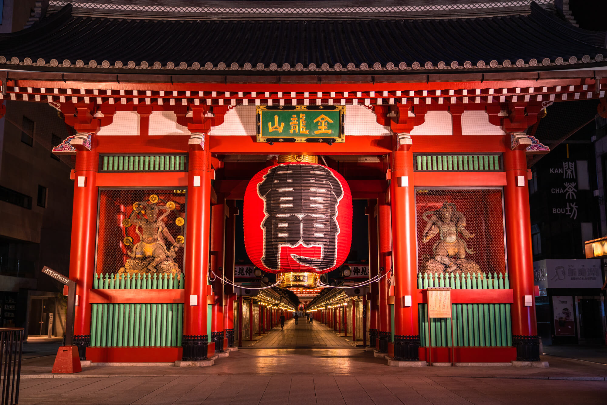

雷門（かみなりもん）は、浅草寺の山門。正式名称は風雷神門（ふうらいじんもん）であり、 「雷門」と書かれた提灯の逆側には「風雷神門」と書かれている
雷門は天慶5年（942年）に平公雅によって創建され、後に現在の場所に再建されました。何度も焼失と再建を繰り返し、現在の雷門は松下幸之助氏の寄進により1960年に再建されたものです。正式名称は「風雷神門」。その名前は門の左右に立つ2体の彫像、雷神と風神に由来するもので、浅草寺を洪水や火災から守ります。また、雷門の裏側には天龍と金龍という2体の彫像もあります。「雷門」の漢字が刻まれた巨大な赤ちょうちんは、高さ3.9メートル、幅3.3メートル、重量はおよそ700キログラム。ちょうちん底部には精巧な龍の彫刻が施されています。ライトアップされた夜の雷門も荘厳な雰囲気で必見です。
ライトアップされた夜の雷門も荘厳な雰囲気で必見です。